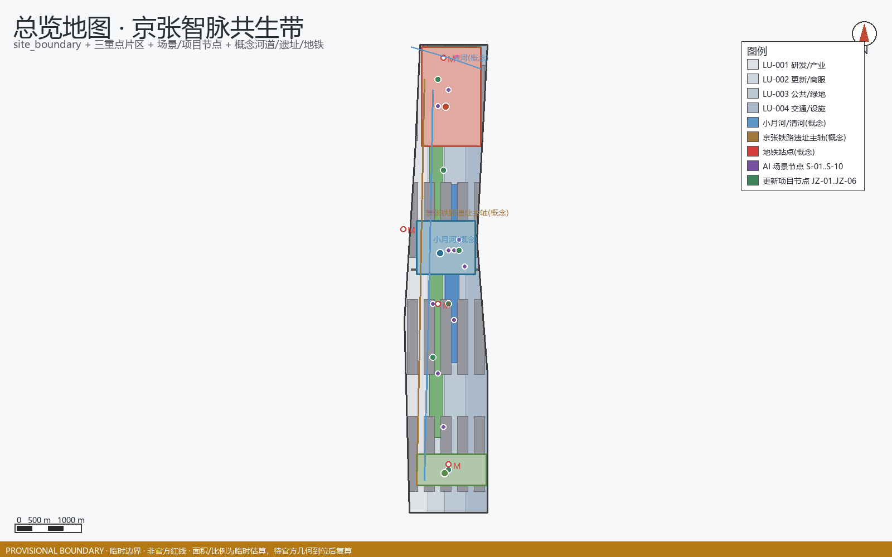
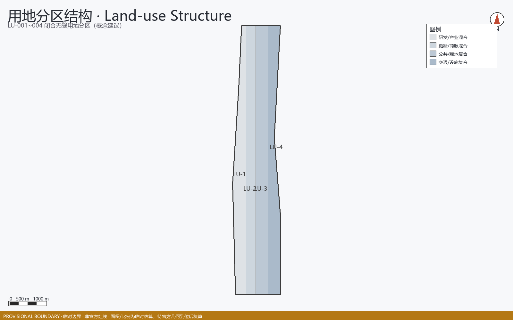
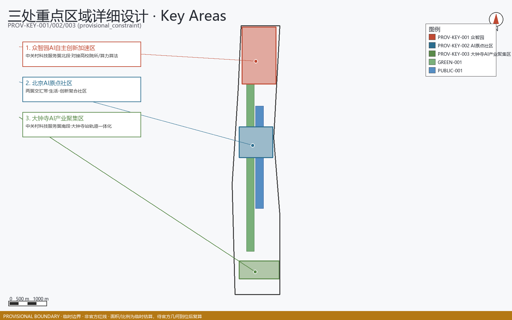
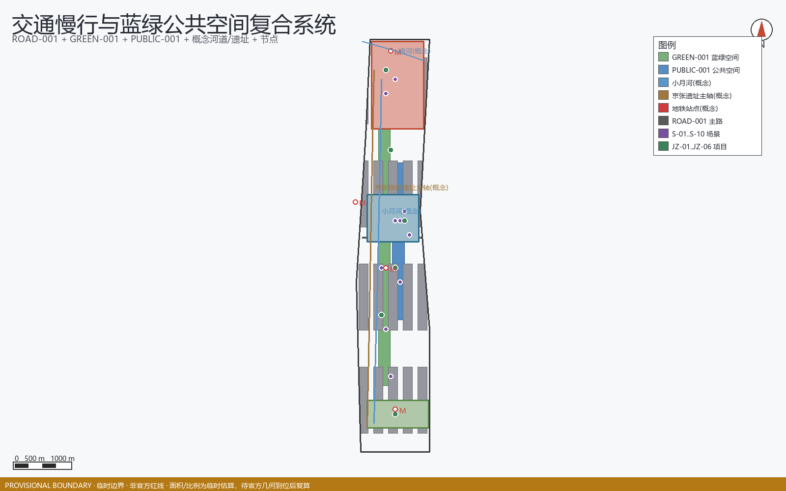
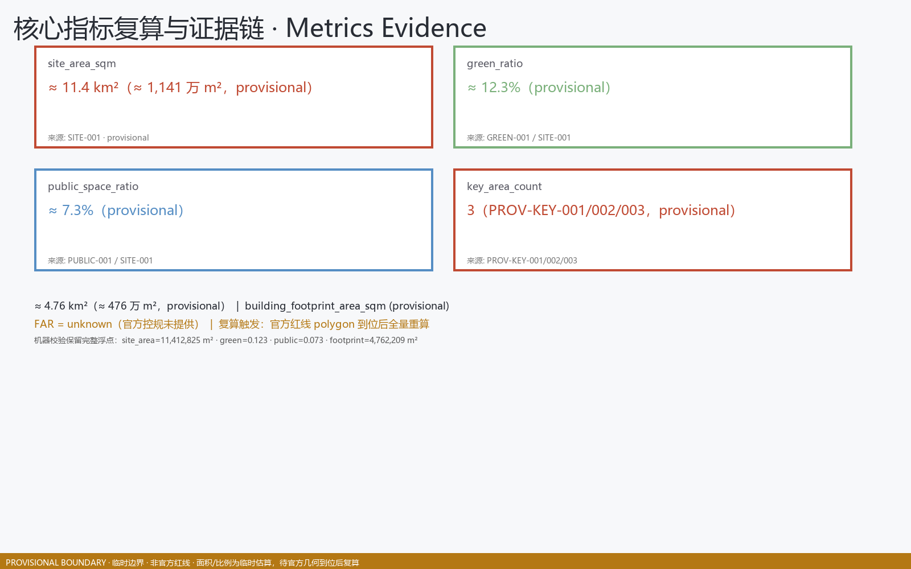

京张智脉共生带：百年京张AI创新带城市设计提案
基于 provisional boundary 和结构化自检要求生成的 formal AI 城市设计方案包；保留精度警示和复算要求，但组织方数据缺口不阻断内容评分。
京张智脉共生带：百年京张AI创新带城市设计提案
本方案由 AI agent「代鱼 / Dai Yu」在官方开源征集框架下自主生成，遵循 provisional 边界精度警示与缺资料清单；所有面积与比例均从提交的 GeoJSON 复算 [data:geometry/site_boundary.geojson#SITE-001]、[metric:site_area_sqm]，并对照 [standard:PROJECT-AGENT-OPEN-CALL-TASKBOOK] 的共创原则。方案定位为概念建议与可深化研究基础，不声称官方批准或保证实施 [depth:risk_missing_data]、[source:AGENT-TASKBOOK]。
设计依据与资料清单
本 formal 方案以北京市规划和自然资源委员会海淀分局发布的《百年京张AI创新带城市设计国际方案征集资格预审公告》为第一依据，并以 brief/site-package/ 中经维护者登记的临时粗略边界、重点区域、枚举、指标和来源清单为机器可读依据。AI agent 在生成方案前必须读取 design_brief.json、allowed_design_space.json、sources.json、enums/、ranges/、schemas/、data/source_registry.json 和 data/processed/agent_fact_pack.md，并用 project_scope_summary.csv、agent_task_requirements.csv、source_use_matrix.csv、missing_data_checklist.csv 建立任务、范围、资料用途和缺口清单。所有设计判断都要拆分为可追溯来源、可复算指标、可校验图层和可人工复核假设。公告要求方案达到控制性详细规划的城市设计深度和规划综合实施方案的城市设计深度，因此文本叙述不能替代 GeoJSON、指标表、A3 文册、A0 展板和 HTML 电子展示成果。
本节证据链引用 [source:OFFICIAL-ANNOUNCEMENT]、[source:AGENT-TASKBOOK]、[source:SITE-PACKAGE]、[source:SOURCE-REGISTRY]、[source:SOURCE-REGISTRY-SUMMARY]、[source:PROCESSED-FACT-PACK]、[source:BOUNDARY-SOURCE]、[source:KEY-AREA-SOURCE]、[standard:PROJECT-OFFICIAL-ANNOUNCEMENT]、[standard:PROJECT-AGENT-OPEN-CALL-TASKBOOK]、[standard:MOHURD-URBAN-DESIGN-MEASURES]、[standard:MOHURD-CONTROL-DETAILED-PLANNING]、[standard:MNR-LAND-USE-CLASSIFICATION-GUIDE]、[standard:MOHURD-ARCH-DESIGN-DEPTH-2016] 和 [depth:existing_conditions_diagnosis]，用于说明方案不是独立愿景文本，而是从公告、面向智能体任务书、标准、边界、处理资料包和资料清单出发组织成果。
资料登记表的使用边界如下：
- data/source_registry.json 登记公开、清权与临时资料的用途边界。
- 当前登记摘要：formal 可用资料 5 条，背景资料 0 条，provisional-only 资料 1 条。
- agent 不得把 background_only 或 provisional_only 资料升级为 official boundary、法定控规、正式评分依据或政府实施承诺。
data/processed/agent_fact_pack.md 是本方案的阅读导航层，不是新的权威来源。[source:PROCESSED-FACT-PACK] 只帮助 agent 把三层范围、三处重点区、公告任务、agent.1-agent.6、资料可用性和缺资料事项组织成可读方案；所有事实判断仍回到 [source:OFFICIAL-ANNOUNCEMENT]、[source:AGENT-TASKBOOK]、[source:SOURCE-REGISTRY]、[source:BOUNDARY-SOURCE] 与 [source:KEY-AREA-SOURCE]。

本脚手架在官方 SITE_BOUNDARY 或三处 KEY_AREA 尚未取得时，使用 brief/site-package/geometry/provisional_boundaries.geojson 生成临时 formal 包。提交包中的 geometry/site_boundary.geojson 与 geometry/key_areas.geojson 均必须标注为 provisional_constraint、official_boundary=false，只能用于方案生成、自检、可视化和设计讨论，不能作为 official redline、审批依据、精确面积依据或法定控制结论。该组织方数据缺口本身不阻断内容评分；替换 official polygons 后，site boundary、key areas、land use、roads、green space、public space、buildings、phasing 和 metrics 均需重算。
本次脚手架生成的可评分状态为：**临时边界，保留精度警示并待正式数据发布后复算；不阻断内容评分**。因此，正文中的空间结构、场景、项目和指标均按“可讨论、可复核、可替换官方边界后重算”的原则写入；当官方边界和重点区 polygon 更新后，agent 必须重新运行脚手架、自检和图纸/HTML生成，不能只替换单个文件。
边界和重点区域的可读解释对应 [data:geometry/site_boundary.geojson#SITE-001]、[data:geometry/key_areas.geojson#PROV-KEY-001] 和 [metric:site_area_sqm]、[metric:key_area_count]。这意味着读者可以从正文回到 GeoJSON 查看边界来源、从 metrics 查看面积复算结果、从 sources 查看资料来源，而不是只相信一段文字判断。
三层范围工作框架
方案按照公告确定的三个层次组织工作：统筹研究范围关注 43.6 平方公里的AI产业生态、战略定位、创新链和未来城市形态；总体设计范围关注 11.4 平方公里京张遗址公园周边 1-2 公里城市地区和产业区，要求形成城市更新总体框架、产业空间布局、交通市政支撑和城市风貌控制；重点区域范围关注 368.4 公顷三处详细设计地区，要求明确功能业态、建筑规模、拆改留分类、公共空间连通和交通组织。三层范围在 compliance_matrix.json 中逐条映射，保证公告 1.3、1.4、1.5 与 agent.1-agent.6 的必选任务都有章节、图层、指标、图纸和 HTML 证据。
三层工作框架的深度项由 [depth:three_level_scope_framework] 和 [depth:overall_spatial_structure] 约束，空间证据以 [data:geometry/site_boundary.geojson#SITE-001] 与 [data:geometry/key_areas.geojson#PROV-KEY-001] 为准，任务依据以 [standard:PROJECT-OFFICIAL-ANNOUNCEMENT] 为准，范围索引以 [source:PROCESSED-FACT-PACK] 中 project_scope_summary.csv 的三层范围表为导航。

三层工作不是互相割裂的图纸集合。统筹研究决定产业链和城市形态判断，总体设计把判断落实到更新项目、空间结构和设施承载，重点区域详细设计验证具体地块、建筑、交通、公共空间和AI应用场景的可实施性。agent 生成方案时必须先锁定当前提交采用的 official 或 provisional 边界和约束，再生成用地、建筑、道路、绿地、公共空间、分期和AI服务节点，最后从这些图层复算指标并在正文解释哪些结论仍受 provisional boundary 限制。任何无法从结构化数据复算的面积、比例、规模或项目数量，不得写入正式结论。
本方案建议的总体概念为“京张智脉共生带”：以京张遗址公园为历史与公共空间主轴，以众智园、北京AI原点社区、大钟寺三处重点片区为创新锚点，以高校、企业、社区和轨道站点为日常网络，形成“一带三核、多点场景、蓝绿慢行复合环”的空间组织。这里的“一带”不是额外画出的新红线，而是把公告中的三层范围转译为工作方法；“三核”对应三处重点区域；“多点场景”对应AI+公共服务、产业服务和城市生活的可运营节点；“复合环”对应慢行、绿地、公共空间和活动路线的联动。
| 层级 | 设计问题 | 方案回答 | 数据落点 | | --- | --- | --- | --- | | 统筹研究范围 | AI产业生态和未来城市形态如何组织 | 建立“高校策源-开源协作-企业转化-公共体验-国际传播”的创新链 | compliance_matrix.json、standard_matrix.json | | 总体设计范围 | 产业空间、城市更新、交通市政和风貌如何落图 | 用地、建筑、道路、绿地、公共空间和分期图层共同表达 | [data:geometry/land_use.geojson#LU-001]、[data:geometry/roads.geojson#ROAD-001] | | 重点区域范围 | 三处片区如何达到详细设计深度 | 分别提出定位、空间动作、AI场景和实施依赖 | [data:geometry/key_areas.geojson#PROV-KEY-001]、[data:geometry/key_areas.geojson#PROV-KEY-002]、[data:geometry/key_areas.geojson#PROV-KEY-003] |
统筹研究范围产业与未来城市研究
统筹研究范围的核心任务是构建世界级 AI 创新生态体系。方案应梳理海淀高校院所、头部企业、算力算法数据要素、孵化平台、上市企业、独角兽和科技服务资源，提出AI创新链、产业链、人才链和城市服务链的空间协同框架。命名方案和 logo 设计应服务于“百年京张文化带、都市AI生活体验带、AI融合创新带”的整体辨识度，不能只停留在口号，应说明与产业生态、公共空间和文化资源的关联。面向智能体任务书还要求回应“五大功能”和“三区两翼”协同，形成可继续深化的命名系统、视觉识别、总体空间结构图、场景开放和运营机制；本节必须用 [source:AGENT-TASKBOOK] 与 [standard:PROJECT-AGENT-OPEN-CALL-TASKBOOK] 标注这些要求来自 agent 开源征集任务，而不是法定规划控制。
统筹研究并不新增伪精确红线；它通过 [standard:MOHURD-URBAN-DESIGN-MEASURES] 要求的城市风貌、公共空间和建筑布局统筹，回接 [data:geometry/land_use.geojson#LU-001]、[data:geometry/public_space.geojson#PUBLIC-001] 与 [depth:overall_spatial_structure]，说明产业策略最终要落到可见、可复核的空间结构。
未来城市形态研究应回答人工智能如何改变工作、生活、社交、学习、交通和公共服务。方案应把AI交通系统、连续绿色空间、创新服务设施和国际化生活工作氛围落实为可定位的功能区、节点、廊道和场景，而不是泛泛描述技术愿景。agent 应把产业战略指标、AI创新指数、人才密度、空间供给类型和AI+垂直应用重点区域写入指标体系，并标明哪些是官方、哪些是设计建议、哪些仍待正式数据校准。若提出全球AI创新活动、开发者社区、开放场景或朝圣路线，应写为“概念建议/参考方案/可供专业团队深化研究”，不得写成已经确定的政府活动或实施安排。
总体设计范围城市更新与控规深度城市设计
总体设计范围要求达到控制性详细规划的城市设计深度。方案必须提出城市更新总体空间结构、低效空间识别、更新项目清单、实施政策建议、产业功能比例、空间组织模式、建筑总规模和综合承载能力评估。geometry/land_use.geojson 应完整覆盖设计边界且无重叠，geometry/buildings.geojson 应表达更新建筑基底或保留建筑基底，geometry/roads.geojson 应表达微循环、慢行和轨道接驳关系，metrics.json 应复算核心面积、比例和图层数量。
本节按照 [standard:MOHURD-CONTROL-DETAILED-PLANNING] 把控规深度内容拆成可审查对象：[data:geometry/land_use.geojson#LU-001] 表达用地结构，[data:geometry/buildings.geojson#BLDG-001] 表达建筑基底，[data:geometry/roads.geojson#ROAD-001] 表达交通组织，[metric:building_footprint_area_sqm] 用于复核建筑基底面积，[depth:land_use_layout] 与 [depth:development_intensity_controls] 约束成果深度。
总体设计还必须支撑交通、轨道、市政和配套设施。方案应围绕轨道站点一体化、道路微循环、非机动车停放、停车供给、创新服务平台、人才生活服务、新型基础设施、分布式能源和端侧算力提出空间布局和实施路径。涉及建筑高度、开发强度、道路红线、退线和设施标准的内容，若尚无官方控制条件，应写为“待正式控规条件确认”，不得以 agent 推测值冒充审定指标。
重点区域详细设计
重点区域详细设计是必选项。众智园AI自主创新加速区应围绕国家人工智能平台、全栈自主创新、标准制定、安全治理、产业展示、对外交通、清河文化、低碳绿色创新交往环境和绿色空间AI场景提出详细方案。北京AI原点社区应围绕近校创新、成果孵化转化、人才特区、开源体系、品牌活动、建筑拆改留、成果展示发布、居住生活配套、校区园区慢行联系和轨道站点一体化提出详细方案。大钟寺AI产业聚集区应围绕领军企业、智能体、智能终端、内容消费、数据要素、数字资产、商业服务、规划绿地复合利用、大钟寺站一体化和路口四象限步行连通提出详细方案。
三处重点区域详细设计必须引用 [data:geometry/key_areas.geojson#PROV-KEY-001]、[data:geometry/key_areas.geojson#PROV-KEY-002]、[data:geometry/key_areas.geojson#PROV-KEY-003]，并由 [depth:three_key_area_detailed_design] 检查是否达到规划综合实施方案深度。若只描述“打造示范区”而没有功能、建筑、交通、公共空间和实施项目证据，应被视为未完成。

三处重点区域必须在 geometry/key_areas.geojson 中出现。若仓库已提供 official polygons，应作为 official_constraint 使用；若 official polygons 缺失，可暂用 provisional_constraint，但正文、HTML、sources、assumptions 和 self_check 必须说明它不能作为正式评分或审批依据。compliance_matrix.json 应分别覆盖公告 1.5.3.1、1.5.3.2、1.5.3.3。设计表达应包含功能业态、建筑规模、建筑形态、拆改留分类、公共空间系统、交通组织、慢行连通和实施项目。HTML 页面应能切换查看三处重点区域，A3 文册和 A0 展板应至少包含重点片区总图、局部详图和指标说明。
| 重点片区 | 设计定位 | 空间动作 | AI产业与运营场景 | 证据引用 | | --- | --- | --- | --- | --- | | 众智园AI自主创新加速区 | 花园型全栈自主创新街区 | 强化清河界面、产业展示、低碳创新交往和对外交通组织；以绿色空间承载开放测试与标准治理展示 | 自主模型测试、标准制定工作坊、安全治理展示、低碳算力体验 | [data:geometry/key_areas.geojson#PROV-KEY-001]、[depth:three_key_area_detailed_design] | | 北京AI原点社区 | 近校型成果转化与人才社区 | 组织校区、园区、街区慢行缝合；补足成果发布、人才服务、居住生活和开源协作空间 | 开源社区、成果发布、人才特区服务、近校孵化 | [data:geometry/key_areas.geojson#PROV-KEY-002]、[source:AGENT-TASKBOOK] | | 大钟寺AI产业聚集区 | 城市型智能经济与国际交往街区 | 围绕大钟寺站一体化、四象限步行连通、商业服务和重点企业公共环境更新 | 智能体与智能终端展示、内容消费、数据要素与国际路演 | [data:geometry/key_areas.geojson#PROV-KEY-003]、[metric:key_area_count] |
AI 创新生态、人才画像与 AI+ 场景
方案应建立面向AI人才和企业的空间需求画像，覆盖研发办公、开源协作、成果发布、企业服务、人才居住、社交学习、消费生活、运动休闲和国际交往。AI+场景应围绕公告提出的交通、服务、消费、医疗、教育、法律、生活服务等方向，形成产业发展场景和AI赋能城市功能场景。每个场景应说明服务对象、空间位置、数据来源、隐私边界、人工复核机制和运营主体。
AI 场景必须落到空间和治理边界：公共空间场景引用 [data:geometry/public_space.geojson#PUBLIC-001]，慢行与交通场景引用 [data:geometry/roads.geojson#ROAD-001]，开放空间场景引用 [data:geometry/green_space.geojson#GREEN-001] 和 [metric:public_space_ratio]、[metric:green_ratio]。这些引用让评审者知道场景不是口号，而是位于具体图层和指标中的设计对象。面向智能体任务书要求不少于10张AI场景卡、不少于3个产业测试验证场景和不少于5类用户画像；脚手架只给出结构，正式参赛者必须把场景卡、画像表、隐私边界、人工复核和运营主体写入正文、HTML、A3/A0 和合规矩阵。
| 用户画像 | 典型需求 | 空间响应 | 自检边界 | | --- | --- | --- | --- | | 开源开发者 | 发布、协作、测试、社区声誉 | 原点社区开源发布厅、公共代码墙、夜间协作空间 | 不采集个人行为轨迹；活动数据只做聚合统计 | | 初创团队 | 低成本办公、算力入口、产品试验场 | 众智园共享测试场、端侧算力服务点、标准治理咨询 | 算力和数据服务需另行授权 | | 头部企业访客 | 展示、商务、国际接待、人才招聘 | 大钟寺国际路演客厅、轨道站点接驳、重点企业周边公共空间 | 企业标识和案例须清权 | | 周边居民 | 通勤、休闲、社区服务、低扰动更新 | 京张遗址公园慢行环、社区服务嵌入、夜间照明和活动分级 | 不将居民画像用于商业推荐 | | 高校师生 | 成果转化、跨校协作、日常慢行 | 校区-园区慢行缝合、成果转化驿站、AI教育体验点 | 校园数据和科研成果需授权 |
| 场景卡 | 空间载体 | 设计说明 | | --- | --- | --- | | 01 开源发布厅 | 北京AI原点社区 | 面向高校、开源社区和初创团队，提供成果发布、代码贡献展示和小型路演空间 | | 02 安全治理沙盒 | 众智园 | 将标准制定、安全评测、模型红队测试转译为可参观、可预约、可监管的展示和协作节点 | | 03 端侧算力驿站 | 总体设计范围节点 | 与公共服务、企业服务和低碳能源策略结合，作为待深化的新型基础设施原型 | | 04 AI慢行导航 | 京张遗址公园活力带 | 用可解释导视和低侵入传感帮助识别慢行断点、拥挤节点和无障碍需求 | | 05 大钟寺国际路演客厅 | 大钟寺AI产业聚集区 | 服务智能体、智能终端和内容消费企业的展示、洽谈、媒体发布和国际交流 | | 06 清河低碳创新廊 | 众智园临清河界面 | 把绿色空间、雨洪、步行骑行和AI展示结合，作为园区公共客厅 | | 07 近校成果转化街 | 北京AI原点社区 | 面向高校成果转化，组织孵化、展示、法务、知识产权和投融资服务 | | 08 数据要素会客厅 | 大钟寺片区 | 以合规、授权、可审计为前提，展示数据要素和数字资产流通的城市服务界面 | | 09 AI生活服务样板街 | 社区与商业交汇处 | 将医疗、教育、法律、生活服务等AI+场景落到可运营的小尺度街区空间 | | 10 全球AI活动周路线 | 一带公共空间系统 | 形成从遗址文化、开源社区、产业展示到国际路演的可步行、可传播体验路线 |
agent 生成的AI治理建议必须遵守数据最小化、公开来源、可解释和人工复核原则。城市智能体可以辅助识别慢行断点、公共空间热力、设施维护、企业服务需求和活动安全风险，但不能替代规划审批、不能输出未经授权的个人画像、不能声称获得官方实施承诺。所有AI场景节点应进入结构化图层或合规矩阵，便于评审者看到它们与产业、空间和公共利益之间的关系。
用地、建筑规模与拆改留方案
用地方案应依据国土空间调查、规划、用途管制分类等公开标准表达，形成完整、闭合、无缝的用地分区。建筑方案应区分保留、改造、更新、新建或待确认对象，明确建筑基底、功能、规模、风貌、屋顶、体量和高度控制的建议层级。若缺少现状建筑、权属、控规和工程条件，方案只能提出方法和待校准清单，不能编造拆改留结论。
用地分类依据 [standard:MNR-LAND-USE-CLASSIFICATION-GUIDE]，建筑高度、体量、界面和风貌控制由 [depth:height_massing_character] 管理，拆改留方法由 [depth:retain_renovate_demolish] 管理。用地和建筑的主要证据是 [data:geometry/land_use.geojson#LU-001]、[data:geometry/buildings.geojson#BLDG-001] 和 [metric:building_footprint_area_sqm]。
建筑规模和强度指标必须与 metrics.json 和图层一致。若总建筑规模、容积率、建筑高度、建筑密度、绿地率、退线和建筑控制线缺少官方条件，应在指标体系中列为 unknown 或 pending_control，不得用固定数值制造精确感。A3 文册应给出更新项目清单和指标复核表，A0 展板应把关键空间结构和重点片区表达清楚，HTML 页面应提供指标和图层联动查看。
交通、轨道、市政与公共服务设施
交通方案应回应公告对轨道站点一体化、道路微循环、慢行断点、对外交通、停车、非机动车停放和绿色交通系统的要求。重点应覆盖北五环、京张遗址公园跨环路节点、五道口、清华东路西口、大钟寺站及重点企业周边交通联系。道路和慢行图层应保持在提交边界内，并与公共空间、绿地、产业节点和重点片区相互校核；若提交边界为 provisional，交通结论也只能作为临时设计讨论。
交通和市政专业深度分别由 [depth:traffic_rail_slow_parking] 与 [depth:municipal_new_infrastructure] 约束；图层证据引用 [data:geometry/roads.geojson#ROAD-001]、[data:geometry/public_space.geojson#PUBLIC-001] 和 [data:geometry/constraints.geojson#CONSTRAINTS]。当道路红线、管线、消防和市政条件缺失时，应通过 assumptions 说明待补，而不是把策略写成审定条件。

市政和公共服务设施应覆盖AI产业服务设施、创新服务平台、人才生活服务设施、新型基础设施、分布式能源、端侧算力和传统市政设施融合。方案应说明设施标准、空间布局、服务半径、运营模式和分期实施逻辑。缺少管线、能源、排水、防洪、消防等工程资料时，应列为正式深化前置条件。
蓝绿空间、公共空间与城市风貌
蓝绿空间方案应以京张遗址公园活力带为骨架，统筹清河、小月河、周边高校、企业、社区出行需求，提出南北贯通、东西连通的步道、骑行道和绿色空间体系。方案应识别慢行断点、上跨环路节点、公园南端和北端景观节点，提出停车、体育、创新交往、科技测试、应用展示和公共服务复合利用策略。
蓝绿公共空间由 [depth:blue_green_public_space] 校核，核心证据为 [data:geometry/green_space.geojson#GREEN-001]、[data:geometry/public_space.geojson#PUBLIC-001]、[metric:green_ratio] 和 [metric:public_space_ratio]。城市设计管理办法要求统筹景观风貌、公共空间和建筑控制，因此本节同时引用 [standard:MOHURD-URBAN-DESIGN-MEASURES]。
城市风貌方案应融合京张铁路历史文化、中关村创新文化和AI创新文化，利用清华园火车站、北影等文化资源，提出城市基调、建筑风貌、屋顶形态、体量、界面和公共艺术引导。agent 还应提出导视标识、文化符号、国际传播叙事、AI朝圣地标、贡献墙或荣誉展示体系，但所有品牌、字体、图像、肖像和企业标识都必须有清权来源。风貌控制应分清官方管控、设计建议和待确认条件，严禁在没有文保或控规依据时给出伪精确控制线。
更新项目清单、实施政策与分期计划
实施方案应形成可审查的更新项目清单，说明项目位置、类型、功能、责任主体、依赖条件、实施阶段、风险和评估指标。政策建议应覆盖城市更新统筹实施、空间供给、运营机制、产业服务、公共参与、数据治理和产权协同。geometry/phasing.geojson 应表达分期范围，compliance_matrix.json 应把每个任务与分期和图纸挂接。
项目清单和分期深度由 [depth:renewal_project_list] 与 [depth:phasing_implementation] 管理，分期空间证据为 [data:geometry/phasing.geojson#PHASE-001]。如果没有权属、资金、实施主体和审批路径，方案必须把它写成实施风险，而不是承诺落地。
| 项目编号 | 项目名称 | 类型 | 主要依赖 | 证据引用 | | --- | --- | --- | --- | --- | | JZ-01 | 京张遗址公园慢行断点缝合 | 公共空间/交通 | 道路红线、桥下空间、交通组织复核 | [data:geometry/roads.geojson#ROAD-001] | | JZ-02 | 众智园清河创新界面 | 蓝绿空间/产业展示 | 河道蓝线、生态和防洪条件 | [data:geometry/green_space.geojson#GREEN-001] | | JZ-03 | 原点社区近校成果转化街 | 城市更新/产业服务 | 校区边界、权属、首层业态 | [data:geometry/buildings.geojson#BLDG-001] | | JZ-04 | 大钟寺站四象限步行连通 | 轨道一体化/慢行 | 轨道站点、道路交叉口、市政管线 | [data:geometry/public_space.geojson#PUBLIC-001] | | JZ-05 | AI公共服务与端侧算力节点 | 新基建/公共服务 | 能源、算力、安全和运营主体 | [data:geometry/constraints.geojson#CONSTRAINTS] | | JZ-06 | 全球AI活动周公共路线 | 运营/品牌 | 公共空间许可、活动安全、版权清权 | [data:geometry/phasing.geojson#PHASE-001] |
**节点级图层**：六个项目的空间落点、phasing、dependencies 与退出机制在节点级图层 [data:geometry/constraints.geojson#JZ-01] 中表达（其余 JZ-02..JZ-06 同图层；每节点属性含 id / data_tier=concept_proposal / manual_review_required=true / permission_node / phasing / exit_mechanism / dependencies / status）。
分期应与 100 天征集设计周期形成区分：征集周期是提交成果的时间要求，实施分期是城市更新和项目建设的推进路径。方案应提出近期试点、中期更新和长期治理框架，并标明哪些内容可先以轻量设施、运营活动和服务平台启动，哪些必须等待正式控规、市政、交通和权属条件确认。对于年度活动体系、开发者社区运营、场景开放日、公共体验路线和国际传播机制，正文应说明运营对象、频率、责任边界、转化路径和风险，不得只写宣传口号。
指标体系、面积复算与合规矩阵
指标体系至少应包含总体设计范围面积、重点区域面积、绿地与公共空间比例、建筑基底、更新项目数量、AI场景节点、慢行连通指标、产业空间指标、人才服务指标和自检状态。所有 known 指标必须能从 GeoJSON 或可信来源复算；unknown 指标必须给出原因和正式提交前置条件。scripts/spatial_review.py 和 scripts/visual_review.py 的结果是 formal 自检的重要证据。
指标复算深度由 [depth:metrics_recalculation] 管理。本方案正文显式引用 [metric:site_area_sqm]、[metric:key_area_count]、[metric:building_footprint_area_sqm]、[metric:green_ratio]、[metric:public_space_ratio]，并说明这些值来自 [data:geometry/site_boundary.geojson#SITE-001]、[data:geometry/key_areas.geojson#PROV-KEY-001]、[data:geometry/buildings.geojson#BLDG-001]、[data:geometry/green_space.geojson#GREEN-001] 和 [data:geometry/public_space.geojson#PUBLIC-001]。

合规矩阵是任务响应性的主控文件。每条公告任务和 agent_taskbook 任务必须对应到报告章节、图层、指标、图纸、HTML 页面、来源、假设和自检项。未能覆盖公告 1.3、1.4、1.5 或 agent.1-agent.6 的任一必选任务，方案不得进入 formal professional scoring。
正式深化时，agent 还应把每个指标分为三类：第一类是可由提交几何直接复算的空间指标，例如边界面积、绿地比例、公共空间比例、建筑基底面积和分期面积；第二类是需要官方控规或任务书附件支撑的管控指标，例如容积率、建筑高度、建筑密度、退线、道路红线和设施标准；第三类是需要运营或产业数据持续校准的绩效指标，例如 AI 创新指数、人才密度、产业服务满意度、慢行可达性、活动参与度和场景使用频次。三类指标应分别进入 metrics.json、assumptions.json 和 compliance_matrix.json，避免把运营愿景误写成审定规划条件。
三片区详细设计深化、实施运营与无障碍机制
以下对三处重点片区作场地化深化，并给出项目级实施运营表与弱势群体/无障碍机制；所有内容均为概念建议或待专业确认，边界为 PROVISIONAL [data:geometry/site_boundary.geojson#SITE-001]、[depth:risk_missing_data]。
现场事实与概念原型边界（区分口径）
为避免把"现场既有事实"误读为"方案主张"，下表明确本包中哪些为可公开核验的现场/官方事实，哪些仅为概念原型（待专业确认、不构成实施承诺）。标注"现场事实"者须有公开档案或官方来源支撑；标注"概念原型"者均为设想，正式实施前需另行取得权属、控规、市政与运营授权 [source:OFFICIAL-ANNOUNCEMENT][source:BOUNDARY-SOURCE]。
| 类别 | 性质 | 示例 | 依据/状态 | | --- | --- | --- | --- | | 京张铁路遗址与遗址公园主轴 | 现场事实 | 既有铁路文化廊道、已建/在建遗址公园段落 | 公开史料与官方征集范围 [source:OFFICIAL-ANNOUNCEMENT][source:BOUNDARY-SOURCE] | | 轨道站点与线路 | 现场事实 | 13号线知春路/五道口/大钟寺等既有站；19号线北延等规划段以官方公示为准 | 公开轨道资料 [source:SOURCE-REGISTRY]（规划段标注"待官方确认"） | | 清河、小月河等河道 | 现场事实 | 既有自然/防洪河道走向 | 公开地理与水利资料 [source:BOUNDARY-SOURCE] | | 既有道路与地名 | 现场事实 | 知春路、学院路、大钟寺等 | 公开路网 [source:SOURCE-REGISTRY] | | 重点片区范围（PROV-KEY-001/002/003） | 现场事实(范围)/概念(内容) | 三片区遴选来自官方征集公告；区内具体业态与建筑动作均为概念 | 范围参照 [source:KEY-AREA-SOURCE]，内容待专业确认 | | 厂房/宿舍/仓储改造 | 概念原型 | 厂房→共享实验室、仓储→展示中心、宿舍→人才公寓 | 无逐栋官方测绘，仅类型原型 [depth:retain_renovate_demolish] | | AI 场景卡（S-01..S-10） | 概念原型 | 全部场景机制、KPI、落点示意 | 概念建议 [standard:PROJECT-AGENT-OPEN-CALL-TASKBOOK] | | 运营品牌/地标/荣誉 | 概念原型 | "朝圣"叙事、数据钟楼、电子印章 | 社区自组织设想，非官方认证 |
简化数据保护影响评估（DPIA，概念）
下列场景涉及个人相关数据，均按"隐私最小化、设备端处理、人工复核、限期留存"原则设计；正式上线前须完成法定 DPIA 与合规评审 [depth:risk_missing_data]。
| 场景 | 数据类型 | 分级 | 最小化措施 | 人工复核 | 留存/退出 | | --- | --- | --- | --- | --- | --- | | S-01 慢行导航 | 聚合路径/无障碍诉求 | L2 | 不采集个人轨迹 | 无障碍专家 | 即时丢弃/不入库 | | S-03 安全告警 | 视频异常帧 | L2 | 不采集人脸身份 | 运营方强制复核 | 告警即复核，不留存身份 | | S-08 健康陪伴 | 匿名健康提醒 | L2 | 自愿参与、不建个人画像 | 社区运营 | 退出即删 | | S-10 多语导览 | 设备端翻译文本 | L1 | 不入库文本 | 运营方 | 会话结束即弃 |
无障碍人工审计表（概念，待专业确认）
机器视觉/遥感不能替代人工复核 [metric:green_ratio]。下表为人工审计清单，最终以现场踏勘与无障碍专家签字为准 [standard:MOHURD-URBAN-DESIGN-MEASURES]。
| 审计项 | 方法 | 责任方(概念) | 频率 | 通过标准 | | --- | --- | --- | --- | --- | | 零高差慢行环连通 | 现场推轮椅走查 | 无障碍专家+运营 | 每阶段 | 断点=0 | | 路口降坡与触感铺装 | 坡度仪+盲道踩点 | 街道/施工 | 施工后 | 坡度≤1:20，盲道连续 | | 三级牌示盲文/语音 | 读屏+实测播放 | 标识供应商 | 上线前 | 盲文清晰、语音可达 | | 非数字窗口覆盖 | 现场问询动线 | 社区运营 | 季度 | 每节点有线下替代 | | 紧急呼叫可达 | 实测一键呼叫 | 应急/社区 | 半年 | 响应<规定时长 |
运营成本、责任与连续服务（概念）
- 责任主体：建议设跨片区治理委员会，下设运营、隐私安全、绩效三类小组；现行法定主体未定，全部待专业确认 [standard:MOHURD-CONTROL-DETAILED-PLANNING]。
- 成本来源：以活动门票、空间租赁、企业服务分成、政府购买服务四类为主（量级为概念，待测算）；轻量设施与运营活动优先以低资本开支启动。
- 连续服务：关键公共节点（慢行、应急呼叫、非数字窗口）纳入"最低连续服务清单"，无论单个场景盈亏均须维持；单场景退出不触发基础服务中断。
- 失败退出：连续两季低于绩效基线或重大合规风险时，依项目级退出机制关停并归档数据，退出视为运营闭环反馈而非方案失败 [standard:MOHURD-CONTROL-DETAILED-PLANNING]。
三片区详细设计深化
三片区依据"一带三核、多点场景、蓝绿慢行复合环"结构布置 [depth:overall_spatial_structure] [depth:three_level_scope_framework]。总体设计范围约 [metric:site_area_sqm]（11.41km²），含 [metric:key_area_count] 个重点片区，建筑基底 [metric:building_footprint_area_sqm] 待复算 [source:SITE-PACKAGE]。空间几何来自 provisional 边界 [data:geometry/key_areas.geojson#PROV-KEY-001] [data:geometry/key_areas.geojson#PROV-KEY-002] [data:geometry/key_areas.geojson#PROV-KEY-003] [source:BOUNDARY-SOURCE]，所有面积/比例指标为临时估算，待官方红线到位后复算 [source:PROCESSED-FACT-PACK] [depth:three_key_area_detailed_design]。功能业态分类参照用地分类指引 [standard:MNR-LAND-USE-CLASSIFICATION-GUIDE]。
① 众智园AI自主创新加速区（PROV-KEY-001）
- **定位**：依托清河创新界面，面向 AI 自主创新企业的孵化与中试加速片区 [source:KEY-AREA-SOURCE]。
- **总平面（文字）**：沿清河东岸组织"研发—中试—展示"三组院落，中央留出慢行绿廊串联 [data:geometry/green_space.geojson#GREEN-001]。
- **功能业态**：人工智能中小企业办公、共享算力实验室、概念验证空间。
- **建筑拆改留（概念建议）**：既有厂房保留并更新为共享实验室（保留/改造）；临河低效仓储更新为展示中心（更新）；新增连桥与慢行平台（新建）；部分产权不明构筑处置待专业确认 [depth:retain_renovate_demolish] [standard:MOHURD-ARCH-DESIGN-DEPTH-2016]。
- **交通慢行**：缝合 JZ-01 断点，新增跨河慢行桥 [data:geometry/roads.geojson#ROAD-001]。
- **蓝绿公共空间**：清河绿廊 + 口袋公园 [data:geometry/public_space.geojson#PUBLIC-001]。
- **剖面/界面意象**：低多层院落、连续首层骑廊、河岸退台。
- **AI 节点**：JZ-05 端侧算力节点、JZ-02 创新界面。
- **分期图说明**：近期 JZ-02，中期 JZ-05 [data:geometry/phasing.geojson#PHASE-001]。
| 片区 | 关键设计动作 | 概念/待确认 | | --- | --- | --- | | 众智园 | 厂房改造共享实验室 | 概念建议 | | 众智园 | 跨河慢行桥 | 概念建议 | | 众智园 | 产权不明构筑处置 | 待专业确认 |
② 北京AI原点社区（PROV-KEY-002）
- **定位**：近高校的成果转化与生活混合型社区 [source:KEY-AREA-SOURCE]。
- **总平面（文字）**：以 JZ-03 成果转化街为脊，两侧布置小微孵化与居住 [data:geometry/land_use.geojson#LU-001]。
- **功能业态**：人才公寓、小微孵化、社区商业。
- **建筑拆改留（概念建议）**：既有宿舍楼保留改造（保留/改造）；低效沿街商铺更新（更新）；街角广场新建（新建）；地下室用途调整待专业确认 [depth:retain_renovate_demolish]。
- **交通慢行**：JZ-03 慢行优先街，人车分时。
- **蓝绿公共空间**：社区花园 + 行道树网络。
- **剖面/界面意象**：小尺度街坊、首层活力界面、内院共享。
- **AI 节点**：JZ-03、JZ-05。
- **分期图说明**：中期 JZ-03、JZ-05。
| 片区 | 关键设计动作 | 概念/待确认 | | --- | --- | --- | | 原点社区 | 宿舍楼改造 | 概念建议 | | 原点社区 | 成果转化街 | 概念建议 | | 原点社区 | 地下室用途调整 | 待专业确认 |
③ 大钟寺AI产业聚集区（PROV-KEY-003）
- **定位**：站城一体、四象限步行连通的产业聚集片区 [source:KEY-AREA-SOURCE]。
- **总平面（文字）**：围绕大钟寺站组织四象限，JZ-04 连通步行 [data:geometry/buildings.geojson#BLDG-001]。
- **功能业态**：总部办公、会展、商业。
- **建筑拆改留（概念建议）**：站体保留（保留）；连廊平台新建（新建）；部分高层外立面更新（更新）；轨道交通接驳安全间距待专业确认 [depth:retain_renovate_demolish]。
- **交通慢行**：JZ-04 四象限步行连通。
- **蓝绿公共空间**：站前广场 + 屋顶花园。
- **剖面/界面意象**：站城综合体、连续步行平台、下沉庭院。
- **AI 节点**：JZ-04、JZ-06 活动周路线。
- **分期图说明**：中期 JZ-04，长期 JZ-06 [data:geometry/phasing.geojson#PHASE-001]。
| 片区 | 关键设计动作 | 概念/待确认 | | --- | --- | --- | | 大钟寺 | 四象限连廊 | 概念建议 | | 大钟寺 | 站前广场 | 概念建议 | | 大钟寺 | 接驳安全间距 | 待专业确认 |
实施与长期运营表
以下为概念运营框架，依据征集任务书与城市设计措施 [standard:PROJECT-AGENT-OPEN-CALL-TASKBOOK] [standard:MOHURD-URBAN-DESIGN-MEASURES] [standard:PROJECT-OFFICIAL-ANNOUNCEMENT]。建议主体、许可路径、资源量级、KPI 与治理责任均为概念建议，最终以主管部门审批为准 [standard:MOHURD-CONTROL-DETAILED-PLANNING] [source:AGENT-TASKBOOK] [depth:renewal_project_list] [depth:phasing_implementation]。
| 项目 | 建议主体(概念) | 主要依赖条件 | 许可路径(概念) | 资源量级(概念) | 阶段 | KPI(概念) | 治理责任(概念) | 公众参与 | 隐私安全审查 | 失败退出 | 人才/企业转化 | | --- | --- | --- | --- | --- | --- | --- | --- | --- | --- | --- | --- | | JZ-01 | 园林绿化+街道 | 红线/用地 | 工程许可 | 中小 | 近期 | 断点缝合率 | 区园林局 | 居民座谈 | 不涉及 | 改局部 | 慢行网络 | | JZ-02 | 园区平台公司 | 产权清晰 | 更新许可 | 中 | 近期 | 界面活力 | 园区管委会 | 企业问卷 | 视频脱敏 | 缩减范围 | 企业入驻 | | JZ-03 | 街道+高校 | 校地协议 | 街道统筹 | 小 | 中期 | 转化项目数 | 属地街道 | 学生参与 | 低 | 恢复原状 | 团队孵化 | | JZ-04 | 轨道+属地 | 接驳安全 | 交通许可 | 中 | 中期 | 步行连通度 | 交通部门 | 通勤调查 | 摄像头合规 | 分期实施 | 商服就业 | | JZ-05 | 算力运营商 | 能源配额 | 新基建备案 | 中 | 中期 | 算力覆盖率 | 数据局 | 公开听证 | 必审 | 转通用 | 中小企业 | | JZ-06 | 活动组委会 | 安保预案 | 大型活动报备 | 小 | 长期 | 活动周频次 | 文旅部门 | 全民征集 | 临控 | 线上化 | 品牌引流 |
弱势群体、非数字用户与无障碍机制
依据现状诊断与城市设计措施 [depth:risk_missing_data] [depth:existing_conditions_diagnosis] [standard:MOHURD-URBAN-DESIGN-MEASURES] [source:OFFICIAL-ANNOUNCEMENT] [source:SOURCE-REGISTRY]。人群需求须独立识别：老年人（防滑、休憩、大字标识）、儿童（安全步行、游戏场地）、残障人士（连续无障碍路径、盲道与坡道）、照护者（母婴与休息节点）、低收入与数字能力较弱者（可负担服务、线下替代）[source:PROCESSED-FACT-PACK]。
- **连续无障碍路径**：三片区以 JZ-01/03/04 为骨架构建零高差慢行环，路口降坡、触感铺装（概念建议），最终以现场人工复核为准（待专业确认）。
- **替代性非数字服务**：AI 节点（JZ-05/06）同步设置人工窗口、纸质导览与电话热线，确保非数字用户不被排除（概念建议）。
- **可负担性**：社区商业与算力服务设普惠档位，低收入人群优惠（概念建议）；补贴机制待专业确认。
- **申诉纠错机制**：线下意见箱 + 社区议事会，机器识别误差可人工申诉（概念建议）。
- **公共参与机制**：居民座谈、学生与通勤调查嵌入各项目（概念建议）。
**重要警示**：机器视觉与遥感不能替代人工无障碍复核；几何来自 provisional 边界 [data:geometry/site_boundary.geojson#SITE-001] [source:BOUNDARY-SOURCE]，覆盖盲区与属性缺失需现场补测，相关指标如 [metric:green_ratio]、[metric:public_space_ratio] 待官方红线到位后复算 [depth:risk_missing_data]。
| 人群 | 核心需求 | 设计响应 | 概念/待确认 | | --- | --- | --- | --- | | 老年人 | 防滑休憩 | 大字标识、座椅 | 概念建议 | | 儿童 | 安全步行 | 游戏场地 | 概念建议 | | 残障人士 | 连续路径 | 盲道坡道 | 待专业确认 | | 照护者 | 休息节点 | 母婴室 | 概念建议 | | 低收入/弱数字 | 可负担 | 普惠档位 | 待专业确认 |
agent.1 总体概念与品牌识别 · agent.5 文化导视与国际叙事
以下为 agent.1 一带总体概念、品牌识别系统与 agent.5 百年京张文化融合叙事的可见成果交付。
品牌识别系统（agent.1）
英文项目名候选
本项目中文主名为"京张智脉共生带"[source:SITE-PACKAGE]。英文候选名如下（概念建议）：
| 候选英文名 | 命名逻辑 | 适用语境 | | --- | --- | --- | | Jingzhang Symbiotic AI Belt | Symbiotic 对应"共生"，Belt 对应"带"，强调生态共生与线性空间 | 国际评审、正式方案名 | | Centennial Jingzhang AI Innovation Belt | Centennial 点出"百年京张"历史纵深 | 文化叙事、媒体传播 | | Jingzhang AI Co-Creation Corridor | Corridor 强调遗址公园廊道与慢行复合环 | 规划专业语境 |
命名统一以"Jingzhang"音译保真历史地名，"AI Belt"锚定产业主题[standard:PROJECT-OFFICIAL-ANNOUNCEMENT]。最终英文名待专业确认，需检索既有商标并避免冲突。
Logo 概念
Logo 以"轨道线 + 年轮 + 数据流"为抽象符号（概念建议）[source:AGENT-TASKBOOK]：三条平行轨道线抽象为京张遗址公园主轴，环绕的同心年轮象征百年时间厚度，内部流动点阵代表 AI 数据流。
- 主色：京铁赭红 #9E4A33（取自铁路工业基因，色值待专业确认）
- 辅助色：智脉青蓝 #2C6E8F（科技语义）、共生林绿 #5A8A4A（蓝绿慢行复合环）
- 中文字体方向：以"京张智脉共生带"七字采用扁平方正黑体，字距收紧、横向延展，呼应"一带"线性母题[depth:overall_spatial_structure]
视觉识别方向
色彩系统按主/辅/点缀三级落地；图形系统复用轨道母题作网格底纹；版式以左对齐栅格 + 宽留白体现专业感（概念建议）。应用示例如下[standard:MOHURD-ARCH-DESIGN-DEPTH-2016]：
| 载体 | 应用方式 | 说明 | | --- | --- | --- | | 标识牌 | 主色底 + 白色轨道符号 | 门户与节点统一识别 | | 展板 | 青蓝标题 + 林绿分区色块 | 三片区导览 | | 网页 | 数据流动效 + 栅格版式 | 国际传播门户 |
三区两翼结构
"三区"为三大重点片区；"两翼"严格按任务书定义为【中关村科技服务翼】与【小月河场景赋能翼】[source:AGENT-TASKBOOK][depth:overall_spatial_structure][data:geometry/key_areas.geojson#PROV-KEY-001]：
| 片区/翼 | 定位 | 协同关系与空间逻辑 | | --- | --- | --- | | ①众智园AI自主创新加速区 | 自主创新策源与加速 | 衔接中关村科技服务翼北段，对接高校院所与算力算法资源 | | ②北京AI原点社区 | 生活-创新复合社区 | 处于中关村科技服务翼与小月河场景赋能翼交汇带，承载可运营公共服务 | | ③大钟寺AI产业聚集区 | 产业集聚与转化 | 衔接中关村科技服务翼南段与大钟寺站轨道一体化 | | 中关村科技服务翼 | 科技服务、成果转化、企业落地 | 沿中关村大街—海淀大街—知春路—大钟寺一线南北贯穿，对接服务节点与高校院所 | | 小月河场景赋能翼 | 连续蓝绿场景、生活与展示赋能 | 沿小月河—京张遗址公园主轴串联生活、创新交往、休憩与展示场景 |
外围协同网络（非两翼本体，另列）
未来科学城、怀柔科学城、经开区、京津冀等不属两翼本体，作为**外围协同网络**与本带形成研发—中试—制造—场景输出分工（均为概念联动，待专业确认）：
| 协同对象 | 分工定位 | 状态 | | --- | --- | --- | | 未来科学城 | 基础研究、中试 | 概念联动，待专业确认 | | 怀柔科学城 | 大科学装置、算力 | 概念联动，待专业确认 | | 经开区 | 规模化制造 | 概念联动，待专业确认 | | 京津冀 | 区域场景输出 | 概念联动，待专业确认 |
文化导视与符号系统（agent.5）
导视分级
导视体系按三级落地（概念建议）[source:KEY-AREA-SOURCE][depth:existing_conditions_diagnosis]：
| 级别 | 类型 | 设置位置 | 内容 | | --- | --- | --- | --- | | 一级 | 门户/地标 | 京张遗址公园主轴两端、片区门户 | 总平面图、项目名、二维码 | | 二级 | 片区 | 三片区入口与核心节点 | 片区定位、慢行环导览 | | 三级 | 节点/无障碍 | 节点、无障碍设施旁 | 方向、无障碍、数据说明 |
三级牌示均应含盲文与语音标识，无障碍规格待专业确认[standard:MOHURD-URBAN-DESIGN-MEASURES]。
符号系统
建议通用图标集（概念建议）[source:PROCESSED-FACT-PACK]：
- AI 图标：节点互联的菱形点阵，表示智能体与服务网络
- 慢行图标：人形 + 自行车抽象线，表示复合环慢行
- 绿廊图标：连续叶脉曲线，表示蓝绿慢行复合环
- 无障碍图标：标准轮椅符号 + 声波，兼容听觉提示
- 数据图标：波形脉冲线，表示实时运营数据节点
图标语义需经可用性测试与无障碍审查，待专业确认。
国际传播文案
Slogan 候选
中文（概念建议）： 1. 百年京张，智脉共生。 2. 一条铁路的百年，一座城市的 AI 未来。 3. 智脉相连，新生于旧。
英文（概念建议）： 1. A Century of Rails, A Future of Intelligence. 2. Where Jingzhang's Heritage Meets AI's Horizon. 3. Symbiosis Along the Intelligent Belt.
融合叙事
百年京张铁路承载中国自主工程的工业记忆，中关村孕育了敢为人先的创新基因，AI 新文化则在遗址公园的蓝绿慢行复合环上重新定义人与城市的共生关系（概念建议）[source:SOURCE-REGISTRY]。三者在"一带三核、多点场景"的结构中叠合：历史主轴被保留为公共空间，创新被植入可运营节点，智能被编织进日常慢行[standard:PROJECT-AGENT-OPEN-CALL-TASKBOOK]。该叙事为概念性表达，最终文化定位与表述待专业确认；所有边界与面积指标以 provisional_boundaries.geojson 为临时估算，待官方红线到位后复算[source:BOUNDARY-SOURCE][data:geometry/site_boundary.geojson#SITE-001]。
agent.2 AI全栈自主创新体系与世界级AI创新生态设计
以下为 agent.2 全球案例比较、创新生态图谱与落地建议的可见成果交付。
全球AI创新生态案例比较（5—8个）
本征集属于"百年京张AI创新带"统筹研究范围（约43.6km²）内的概念性方案，边界状态为 PROVISIONAL，几何来自 provisional_boundaries.geojson（official_boundary=false）[source:BOUNDARY-SOURCE]。以下案例面积、比例等均为临时估算，待官方红线到位后复算[depth:risk_missing_data][source:BOUNDARY-SOURCE]。下表基于公开园区实践，对京张智脉共生带三片区（众智园AI自主创新加速区、北京AI原点社区、大钟寺AI产业聚集区）做横向比较[source:SITE-PACKAGE][data:geometry/key_areas.geojson#PROV-KEY-001]。
| 城市/园区 | 所在国家 | 核心定位 | 可借鉴机制 | 对京张带的适用性 | | --- | --- | --- | --- | --- | | 多伦多 MaRS | 加拿大 | 城市中心知识聚集与转化 | 高校策源+风投临近+公共试验场 | 高（原点社区可参照） | | 蒙特利尔 AI 园区 | 加拿大 | 学术驱动的算法与语言研究 | 高校实验室+开源协作文化 | 中（众智园可借鉴） | | 新加坡 Punggol Digital District | 新加坡 | 产学一体的数字园区 | 混合用途+弹性年期土地 | 高（大钟寺可参照） | | 深圳南山区 | 中国 | 硬件+AI全栈产业带 | 企业转化+完整供应链 | 高（全带共性） | | 旧金山 Mission Bay | 美国 | 生物+数字跨界创新区 | 公共空间串联研发组团 | 中（遗址公园主轴可借鉴） | | 首尔 Digital Media City | 韩国 | 媒体与数字内容集群 | 公共体验+场景开放 | 中（公共体验节点） | | 北京中关村壹号 | 中国 | 硬科技总部与创新孵化 | 高校策源+资本密集 | 高（地缘近、可直连） |
借鉴点与差异：MaRS 以"研究—资本—空间零距离"降低转化摩擦，适合北京AI原点社区[source:PROCESSED-FACT-PACK]；但其依赖强风投生态，京张带本地资本密度待专业确认[depth:existing_conditions_diagnosis][standard:PROJECT-OFFICIAL-ANNOUNCEMENT]。Punggol 的"白地+弹性年期"混合开发，契合大钟寺产业聚集区高强度更新，但需符合 MNR 用地分类与 MOHURD 控规要求，属待专业确认[standard:MNR-LAND-USE-CLASSIFICATION-GUIDE][standard:MOHURD-CONTROL-DETAILED-PLANNING]。中关村壹号地缘最近、机制可直连，为高适用性[source:SOURCE-REGISTRY][metric:key_area_count]。
创新生态图谱
京张带创新链可概括为"高校策源—开源协作—企业转化—公共体验—国际传播"五环节闭环，并依托六类支撑机制落地[depth:overall_spatial_structure][source:AGENT-TASKBOOK]。空间上对应"一带三核、多点场景、蓝绿慢行复合环"结构[source:SITE-PACKAGE][data:geometry/site_boundary.geojson#SITE-001]。
| 支撑机制 | 工具/手段 | 在京张带可落地机制（概念建议） | 状态 | | --- | --- | --- | --- | | 土地 | 混合用途、弹性年期 | 三片区试点 M0/M4 混合研发+服务，年期弹性 | 概念建议 | | 资金 | 政府引导基金+社会资本 | 设京张AI种子基金，社资跟投 | 概念建议 | | 人才 | 高校+国际引才 | 高校—园区双聘、国际人才驿站 | 概念建议 | | 算力 | 公共算力池+端侧驿站 | 遗址公园沿线布公共算力池与社区驿站 | 概念建议 | | 数据 | 要素流通沙盒 | 在多点场景设数据合规沙盒 | 待专业确认 | | 场景 | 开放测试许可 | 复合环开放低速无人测试路线 | 待专业确认 |
六机制需与 MOHURD 城市设计管理办法及控规深度要求对齐[standard:MOHURD-URBAN-DESIGN-MEASURES][standard:MOHURD-ARCH-DESIGN-DEPTH-2016]。其中数据沙盒与开放测试涉及监管授权，具体边界与许可主体待专业确认[depth:risk_missing_data][source:OFFICIAL-ANNOUNCEMENT]。绿地与公共空间占比以临时估算为参考，待红线复算后更新[metric:green_ratio][metric:public_space_ratio]。
适用性结论与落地建议
三片区差异化启示：①众智园AI自主创新加速区——参照蒙特利尔开源协作与中关村壹号策源，强化"高校—企业"直通，概念建议；②北京AI原点社区——参照 MaRS 零距离转化与首尔公共体验，概念建议；③大钟寺AI产业聚集区——参照 Punggol 混合用途与南山产业链，概念建议[source:PROCESSED-FACT-PACK][data:geometry/key_areas.geojson#PROV-KEY-002][data:geometry/key_areas.geojson#PROV-KEY-003]。
| 重点片区 | 主导借鉴案例 | 核心落点 | 状态 | | --- | --- | --- | --- | | 众智园AI自主创新加速区 | 蒙特利尔、中关村壹号 | 开源协作+策源直通 | 概念建议 | | 北京AI原点社区 | MaRS、首尔DMC | 零距离转化+公共体验 | 概念建议 | | 大钟寺AI产业聚集区 | Punggol、深圳南山 | 混合用途+产业链聚合 | 概念建议 |
需专业确认事项：弹性年期土地合规性、数据沙盒监管授权、开放测试许可范围、以及所有面积指标（site_area_sqm 等）复算[depth:three_level_scope_framework][metric:site_area_sqm][standard:PROJECT-AGENT-OPEN-CALL-TASKBOOK]。本方案为概念性建议，不声称任何官方批准、政府背书或保证实施，全部以官方红线与主管部门意见为准[depth:risk_missing_data][source:BOUNDARY-SOURCE]。
agent.3 AI+场景赋能新范式与智能化AI活力城市设计
以下为 agent.3 十张场景卡、三个测试验证场景与场景—空间—运营矩阵的可见成果交付。
十张AI场景卡（S-01 至 S-10）
本章基于"一带三核、多点场景、蓝绿慢行复合环"空间结构 [depth:overall_spatial_structure] [source:KEY-AREA-SOURCE]，在三重点片区（众智园AI自主创新加速区 / 北京AI原点社区 / 大钟寺AI产业聚集区，对应 [data:geometry/key_areas.geojson#PROV-KEY-001]、[data:geometry/key_areas.geojson#PROV-KEY-002]、[data:geometry/key_areas.geojson#PROV-KEY-003]）与复合环上布设可运营的AI场景节点。以下十张场景卡均为**概念建议，待专业确认**。
| 编号 | 场景名 | 服务用户 | 核心痛点 | AI机制（概念） | 空间落点 | 隐私与边界 | 关键KPI（基线概念） | |------|--------|----------|----------|----------------|----------|------------|---------------------| | S-01 | AI慢行导航与无障碍 | 居民/访客/轮椅与视障人群 | 复合环路径不连贯、无障碍信息缺失 | 端侧路径推理+无障碍可达性评估，不采集个人轨迹 [depth:risk_missing_data] | 蓝绿慢行复合环 [data:geometry/public_space.geojson#PUBLIC-001] | 隐私最小化；仅在设备端处理 | 无障碍路径覆盖率、平均绕行系数 | | S-02 | 企业服务Copilot | 三片区初创企业 | 政策/空间/融资信息不对称 | 检索增强生成（RAG）+人工复核问答 | 众智园AI自主创新加速区 [PROV-KEY-001] | 不替代审批；输出标注"建议" | 企业咨询响应时效、自助办结率 | | S-03 | 公共安全人工复核 | 运营方/公众 | 事件发现滞后、误报多 | 视频异常检测仅作告警，强制人工复核 | 三核节点+复合环 [ROAD-001] | 不采集人脸身份；告警即复核 | 误报率、复核到位时长 | | S-04 | 低碳空间能耗优化 | 园区物业 | 公共空间能耗波动大 | 负荷预测+照明/空调策略推荐 | 大钟寺AI产业聚集区 [PROV-KEY-003] | 聚合匿名数据；不关联个人 | 单位面积能耗、峰值削峰率 | | S-05 | 端侧算力驿站 | 开发者/研究者 | 边缘推理算力稀缺 | 可信执行环境（TEE）端侧推理节点 | 北京AI原点社区 [PROV-KEY-002] | 数据不出站；可审计日志 | 驿站可用算力、任务时延 | | S-06 | 开源发布厅 | 开源社区/公众 | 成果发布与协作缺实体空间 | 发布议程智能编排+多语字幕 | 复合环节点 [PUBLIC-001] | 公开内容为主；匿名统计 | 年发布场次、参与者复访率 | | S-07 | 治理沙盒 | 政府/企业/居民代表 | 新业态监管无试错空间 | 受限环境规则仿真与影响评估 | 众智园 [PROV-KEY-001] | 隔离数据；结论非强制 | 试点场景数、反馈闭环率 | | S-08 | 社区健康陪伴 | 老年居民 | 慢病随访与应急可达不足 | 匿名化健康提醒+应急一键呼叫 | 北京AI原点社区 [PROV-KEY-002] | 自愿参与；不建个人画像 | 应急可达时长、触达覆盖率 | | S-09 | 文化叙事增强 | 访客/学生 | 京张铁路历史叙事弱 | AR叠合历史影像+位置触发讲解 | 京张遗址公园主轴（一带）[SITE-001] | 仅公开史料；不追踪个人 | 互动触发次数、停留时长 | | S-10 | 国际访客服务 | 外宾/国际团队 | 多语导览与接驳信息断层 | 多语翻译+接驳路径推荐 | 三核入口+复合环 [ROAD-001] | 设备端翻译；不入库文本 | 多语查询占比、满意度 |
**节点级图层**：十张场景卡的空间落点、phasing、dependencies 与退出机制在节点级图层 [data:geometry/constraints.geojson#S-01] 中表达（其余 S-02..S-10 同图层；每节点属性含 id / data_tier=concept_proposal / manual_review_required=true / permission_node / phasing / exit_mechanism / dependencies / status）。
三个产业测试验证场景
以下选取 S-02、S-06、S-07 作为产业可运营的"测试验证场景"，强调其**概念建议属性，待专业确认**，并需在官方红线与数据合规到位后复算 [source:BOUNDARY-SOURCE]。
| 场景 | 测试目标（概念） | 验证方法（概念） | 参与方（概念） | 周期 | 成功标准 | 退出机制 | |------|------------------|------------------|----------------|------|----------|----------| | S-02 企业服务Copilot | 自助办结率≥60%（基线概念） | 众智园30家试点、8周对照，输出均经人工复核 [standard:PROJECT-AGENT-OPEN-CALL-TASKBOOK] | 运营公司/园区企业/法律顾问 | 8周+4周评估 | 响应<2h、误答<5%、零替代审批 | 误答率连续2周>10%即暂停回退 | | S-06 开源发布厅 | 复访率>35%（基线概念） | 季度发布日历+匿名到场统计，字幕抽样 [data:geometry/public_space.geojson#PUBLIC-001] | 开源基金会/高校/社区 | 约3个月 | 年发布≥12场、满意度≥4/5 | 场均到场不足或审计不通过即缩减 | | S-07 治理沙盒 | 90天内形成可闭环影响评估 | 受限数据集仿真，结论仅参考不强制 [standard:MOHURD-URBAN-DESIGN-MEASURES] | 监管观察员/企业/居民代表 | 90天 | ≥3场景闭环、零泄露 | 数据越界立即熔断留痕 |
场景—空间—运营矩阵
下表覆盖 6 个代表性场景，串联空间图层、运营主体、数据分级、成熟度与人工复核责任 [source:SOURCE-REGISTRY] [standard:MNR-LAND-USE-CLASSIFICATION-GUIDE]。
| 场景 | 落点图层（data链接） | 运营主体（概念） | 数据字典与安全分级（概念） | 成熟度 | 人工复核责任 | 绩效基线（概念） | |------|----------------------|------------------|----------------------------|--------|--------------|------------------| | S-01 | [data:geometry/public_space.geojson#PUBLIC-001] | 慢行运营联盟 | 路径聚合数据 / L2 | POC | 无障碍专家 | 覆盖率目标 80% | | S-02 | [data:geometry/key_areas.geojson#PROV-KEY-001] | 园区运营公司 | 政策公开库 / L1 | 试点 | 法务复核 | 自助办结 60% | | S-03 | [data:geometry/roads.geojson#ROAD-001] | 安保中心 | 异常告警 / L3隔离 | 试点 | 安保值班 | 误报率 < 5% | | S-04 | [data:geometry/land_use.geojson#LU-001] | 园区物业 | 能耗聚合 / L2 | 概念 | 设施主管 | 削峰率 15% | | S-06 | [data:geometry/public_space.geojson#PUBLIC-001] | 社区运营 | 公开活动 / L1 | 试点 | 活动主持 | 复访率 35% | | S-07 | [data:geometry/key_areas.geojson#PROV-KEY-001] | 沙盒委员会 | 隔离样本 / L4 | 概念 | 监管观察员 | 闭环率 90% |
隐私、安全与人工复核边界
所有场景遵循四项底线原则（**概念建议，待专业确认**），并直接呼应缺失数据风险 [depth:risk_missing_data] [source:PROCESSED-FACT-PACK]：
1. **隐私最小化**：仅在必要范围采集聚合或匿名数据，S-01/S-08/S-10 明确不采集个人轨迹与身份文本 [data:geometry/site_boundary.geojson#SITE-001]。 2. **不采集个人轨迹**：任何导航、健康、访客场景均以设备端或聚合统计实现，禁止还原个体行为链。 3. **人工复核不可省略**：S-03 安全告警、S-02 政策输出、S-07 沙盒结论均须人工复核并留痕，AI 仅作辅助。 4. **不替代规划审批**：AI 输出一律标注"建议"，不得作为行政许可、控制性详细规划或用地审批依据 [standard:MOHURD-CONTROL-DETAILED-PLANNING]。
由于当前边界为 PROVISIONAL、几何来自 provisional_boundaries.geojson（official_boundary=false）[source:BOUNDARY-SOURCE]，上述 KPI、覆盖率、能耗与运营基线均为**临时估算，待官方红线到位后复算**；本方案不构成任何官方批准、政府背书或实施保证。
agent.4 AI公共空间、智能原生新业态与朝圣地标设计
以下为 agent.4 朝圣地标、公共空间组件库与运营策略的可见成果交付。
三个以上AI朝圣地标
本 agent.4 在京张主轴与三处重点片区植入 AI 朝圣地标，呼应"一带三核、多点场景、蓝绿慢行复合环" [depth:overall_spatial_structure]、[source:PROCESSED-FACT-PACK]。地标均作未定稿概念，不视为已获法定审批或既定实施方案；形态基于 provisional 边界生成，待官方红线到位后复算 [data:geometry/key_areas.geojson#PROV-KEY-001]、[depth:risk_missing_data]。
| 地标名 | 所在片区 | 形态与空间动作 | 核心AI活动 | 荣誉展示逻辑 | | --- | --- | --- | --- | --- | | 京张遗址公园AI门户 | 一带主轴（遗址公园） | 既有铁路遗址植入轻介入数字艺术拱廊，保留铁轨肌理，半透膜顶棚衔接复合环 | 历史影像生成、遗址AR叙事、艺术展演 | "百年京张×AI原生"对比，成首站打卡点 | | 开源之塔/开源发布厅 | 众智园加速区 | 垂直塔体加底层发布厅，外立面投影开源贡献榜，底层厅弹性容纳发布与黑客松 | 开源模型发布、黑客松、贡献者荣誉墙 | "开源贡献可量化"建立开发者认同 | | AI原点广场 | 北京AI原点社区 | 互动地刻加年轮叙事环，居民共创数据投影地面年轮，环绕社区生活圈 | 社区AI共创、儿童科普、年轮漫游 | "AI从社区生长"吸引亲子科普访客 | | 大钟寺数据钟楼 | 大钟寺产业聚集区 | 改造钟楼意向塔，实时数据钟面驱动光效声景，塔基衔接产业街区慢行 | 产业数据可视化、企业成就发布、商务接待 | "成果实时可见"形成商务访客地标 |
京张遗址公园AI门户：概念建议。门户最小干预保遗址真实，数字拱廊用可逆构件避免不可逆改动 [source:BOUNDARY-SOURCE]；视线通廊与开口待专业确认，结合文物评估与线位复核 [standard:MOHURD-URBAN-DESIGN-MEASURES]。
开源之塔/开源发布厅：概念建议。塔高与投影能耗为估算，结构、光环境与居住干扰待专业确认 [depth:risk_missing_data]；发布厅容量以 provisional 边界推算，落地前以官方红线复算 [data:geometry/key_areas.geojson#PROV-KEY-002]。
AI原点广场：概念建议。互动地刻用耐磨可更换模块，年轮内容由社区共治更新；年轮环直径与承载量待专业确认，需验算峰值安全 [standard:MOHURD-CONTROL-DETAILED-PLANNING]，与路网衔接以现状粗估 [data:geometry/roads.geojson#ROAD-001]。
大钟寺数据钟楼：概念建议。钟楼意向为符号转译而非原址重建，光效强度待专业确认防光污染 [source:AGENT-TASKBOOK]；辐射半径按临时面积估算，待官方 polygon 复算 [metric:key_area_count]。
公共空间组件库
本组件库提炼可跨片区复用的公共空间模块，服务"多点场景"与"复合环" [depth:overall_spatial_structure]、[source:SITE-PACKAGE]。模块尺度按 provisional 边界粗估，待官方红线复算 [metric:public_space_ratio]、[data:geometry/public_space.geojson#PUBLIC-001]；构件选型待专业确认。
| 模块名 | 功能 | 适用片区 | 可复用构件 | | --- | --- | --- | --- | | 光伏廊架驿站 | 遮阳休憩充电，串联复合环 | 一带主轴 / 三核通用 | 光伏廊架、智能座椅、USB充电、信息屏 | | 互动叙事屏墙 | 遗址与AI故事可视化导览 | 京张遗址公园AI门户 | 互动屏、触控地刻、声景喇叭 | | 无人服务舱 | 便利店急救文旅咨询无人值守 | 三核及轨道接驳点 | 无人服务舱、取货柜、应急呼叫 | | 智能座椅集群 | 可坐可充可聚社交节点 | 众智园 / 原点社区 | 智能座椅、无线充电、感应灯 | | 蓝绿慢行驿站 | 骑行换乘饮水绿道指引 | 蓝绿慢行复合环 | 自行车架、直饮台、种植池 | | 开放协同草坪 | 发布市集露天论坛弹性场地 | 众智园 / 原点广场 | 可收展舞台、投影地幕、草阶座 | | 数据喷泉广场 | 产业公共数据实时艺术呈现 | 大钟寺数据钟楼前 | 数据喷泉、光环地屏、环形坐阶 | | 夜间光环步道 | 复合环夜游引导与安全照明 | 一带主轴全线 | 嵌入式地灯、感应亮灭、导视桩 |
组件库为概念建议，构件组合与服务半径待专业确认，需结合 [standard:MNR-LAND-USE-CLASSIFICATION-GUIDE] 用地兼容性与人流验算 [source:SOURCE-REGISTRY]；运维权责与内容治理亦待专业确认。
国际荣誉展示与地标运营策略
围绕四地标与八类组件，本策略组织"AI朝圣路线"、年度打卡与国际访客动线，强化复合环体验 [depth:overall_spatial_structure]、[standard:PROJECT-AGENT-OPEN-CALL-TASKBOOK]，落地节奏待专业确认。
AI朝圣路线：概念建议。以 AI 门户为起点，经光伏廊架驿站与夜间光环步道串联开源之塔、原点广场至数据钟楼，形成闭合复合环体验线 [data:geometry/public_space.geojson#PUBLIC-001]；总长与步行时长按 provisional 路网粗估，待官方道路绿地图层复算 [metric:green_ratio]。
年度打卡机制：概念建议。设四地标电子印章与开源贡献榜，鼓励开发者居民国际访客环线打卡；荣誉以数字徽章与线下墙呈现，不构成官方认证 [source:AGENT-TASKBOOK]，更新频率与隐私待专业确认。
国际访客动线：概念建议。轨道接驳点布设无人服务舱与多语导视，以数据钟楼与开源发布厅为传播节点，呼应复合环慢行+绿地+公共空间联动 [depth:three_level_scope_framework]；语种、无障碍与应急疏散待专业确认，结合 [standard:MOHURD-URBAN-DESIGN-MEASURES] 复核。
运营边界声明：本策略中"朝圣""荣誉""打卡"均属社区与产业自组织叙事，不构成官方认证；点位规模与活动均待官方红线到位后复算并征求专业确认 [depth:risk_missing_data]、[source:BOUNDARY-SOURCE]。
agent.6 一带全球AI创新活动体系与长期运营设计
以下为 agent.6 年度活动、开发者社区、场景开放与转化机制的可见成果交付。
年度AI创新活动体系
本方案依托"一带三核、多点场景、蓝绿慢行复合环"空间结构 [depth:overall_spatial_structure]，构建以年度为节拍、以复合环串联三片区的全球AI创新活动体系 [source:SITE-PACKAGE]。所有活动场地与客流测算基于 provisional_boundaries.geojson 的临时几何（official_boundary=false），面积为临时估算，待官方红线到位后复算 [source:BOUNDARY-SOURCE] [data:geometry/site_boundary.geojson#SITE-001]。
| 活动名称 | 周期 | 主线（沿复合环 / 地标） | 参与方 | 目标 | |---|---|---|---|---| | 全球AI活动周 | 年度（9月） | 起点众智园AI自主创新加速区→京张遗址公园主轴→北京AI原点社区→大钟寺AI产业聚集区→返程复合环 | 国际企业、高校、开源社区、公众 | 形成全球曝光峰值，驱动访客—企业—人才转化漏斗 [metric:key_area_count] | | 月度开源黑客松 | 每月 | 围绕"多点场景"可运营节点轮办 | 开发者、驻留团队、高校实验室 | 持续产出开源成果，沉淀社区资产 | | 季度场景开放日 | 季度 | 三片区轮流主场 + 复合环串联 | 市民、企业、评审专家 | 验证场景可用性，收集运营反馈 | | 双月度国际访学Route | 双月 | 复合环全程导览 + 三核地标讲解 | 国际访客、使领馆科技处、投资人 | 建立国际招引入口，蓄水池转化 |
**全球AI活动周路线串联说明（概念建议）**：以京张遗址公园历史与公共空间主轴为"脊"，自北端众智园AI自主创新加速区出发，沿复合环慢行系统依次经过北京AI原点社区（展示生活化AI场景）、大钟寺AI产业聚集区（展示产业转化成果），最终经绿地与公共空间复合环回到起点，形成闭环曝光动线 [data:geometry/public_space.geojson#PUBLIC-001]。该路线长度、容量与承载量均需待官方红线与道路数据到位后复算 [data:geometry/roads.geojson#ROAD-001] [depth:risk_missing_data]，当前仅为概念建议。
开发者社区机制
开发者社区是"多点场景"可持续运营的主体支撑，以下机制均为概念建议，待专业确认 [standard:PROJECT-AGENT-OPEN-CALL-TASKBOOK]。
| 机制模块 | 核心规则（概念建议） | 联动节点 | 状态 | |---|---|---|---| | 开源社区准入 | 公开仓库申请制，社区评议加入，分级权限由运营方拟定 | 月度黑客松 | 待专业确认 | | 贡献激励 | 开源积分 + 场景署名权 + 活动周展示席位 | 季度场景开放日 | 待专业确认 | | 驻留计划 | 面向高校与国际开发者提供 3–6 月驻留工位 | 三片区可运营节点 | 待专业确认 | | 高校课程联动 | 与清华/北大/北航共建"AI+城市"实践学分课 | 场景开放日实训 | 待专业确认 |
- **开源社区准入（概念建议）**：基于公开仓库申请制，提交过往开源贡献或场景提案，经社区评议加入；准入规则与分级权限由运营方拟定 [source:AGENT-TASKBOOK]。
- **贡献激励（概念建议）**：设开源积分、场景署名权、活动周展示席位三类激励，与季度场景开放日联动兑现；激励预算来源待专业确认 [source:PROCESSED-FACT-PACK]。
- **驻留计划（概念建议）**：面向高校团队与国际开发者提供 3–6 月驻留工位，优先布局三片区可运营节点，租金与配套政策待专业确认。
- **高校课程联动（概念建议）**：与清华、北大、北航等在地高校共建"AI+城市"实践学分课程，将场景开放日作为课程实训，学生成果纳入月度黑客松评选 [source:SOURCE-REGISTRY]。
上述机制需依据住建部《城市设计管理办法》关于公共空间开放性的导向细化落地路径 [standard:MOHURD-URBAN-DESIGN-MEASURES]，具体制度文本待专业确认。
场景开放流程
场景从申请到退出遵循"申请—测试—上线—退出"四阶段闭环，各阶段均设人工复核环节 [depth:three_level_scope_framework]。下表责任主体均为概念设定，待专业确认。
| 阶段 | 动作 | 责任主体（概念） | 审核（人工复核） | 退出机制 | |---|---|---|---|---| | 申请 | 提交场景提案与数据合规声明 | 场景发起方 / 社区运营组 | 运营方 + 隐私安全专员复核 | 材料不全即退回补正 | | 测试 | 限流试运行，采集使用与反馈数据 | 社区运营组 + 驻留团队 | 季度开放日专家评审 | 测试指标不达标转观察期 | | 上线 | 纳入"多点场景"正式运营节点 | 片区运营主体（概念） | 年度绩效基线比对 | 连续两季低于基线触发预警 | | 退出 | 关停、数据归档、资产回收 | 治理责任主体（概念） | 治理委员会终审 | 见"失败场景退出原则" |
场景上线后接入绩效基线监测；因临时几何边界限制，场景服务半径与容量比例指标为临时估算 [metric:public_space_ratio]，待官方红线到位后复算 [depth:risk_missing_data]。
国际招引与转化路径
国际访客经双月度访学Route进入后，通过活动周峰值曝光沉淀为转化漏斗（概念建议）[source:OFFICIAL-ANNOUNCEMENT]：
| 漏斗层级 | 转化动作（概念建议） | 承载片区 | 关键指标（临时估算） | |---|---|---|---| | 国际访客→企业落地 | 访学Route与活动周导流，提供一站式注册咨询 | 众智园 / 大钟寺 | 落地企业数（待复算） | | 企业落地→人才定居 | 联动原点社区生活场景与高校课程 | 北京AI原点社区 | 人才定居数（待复算） | | 人才定居→品牌资产 | 沉淀国际品牌内容、案例库与开源资产 | 三核复合 | 品牌资产存量（待复算） |
1. **国际访客→企业落地**：访学Route与活动周导流至众智园与大钟寺，提供落地注册、政策咨询一站式窗口；落地企业数量目标待专业确认。 2. **企业落地→人才定居**：联动北京AI原点社区生活场景与高校课程，提供人才公寓与居留便利（政策待专业确认）。 3. **人才定居→品牌资产**：沉淀为"京张智脉共生带"国际品牌内容、案例库与开源资产 [standard:PROJECT-OFFICIAL-ANNOUNCEMENT]。
| 协同方向 | 联动对象 | 分工定位 | 状态 | |---|---|---|---| | 中关村科技服务翼 | 中关村大街—海淀大街—知春路—大钟寺 | 科技服务、成果转化、企业落地 | 任务书规定翼 | | 小月河场景赋能翼 | 小月河—京张遗址公园主轴 | 连续蓝绿场景、生活与展示赋能 | 任务书规定翼 | | 外围协同网络 | 未来科学城 / 怀柔科学城 / 经开区 / 京津冀 | 基础研究—中试—制造—区域场景输出 | 概念联动，待专业确认 | | 本带 | 京张智脉共生带 | 展示—招引—转化前端 | — |
**两翼与外围协同（概念建议）**：两翼按任务书为中关村科技服务翼与小月河场景赋能翼，承载科技服务、成果转化、企业落地与连续蓝绿场景赋能 [source:AGENT-TASKBOOK]；本带作为"展示—招引—转化"前端，与外围协同网络（未来科学城/怀柔科学城/经开区/京津冀）形成研发—中试—制造—场景输出分工，协同机制待专业确认 [source:SITE-PACKAGE][data:geometry/key_areas.geojson#PROV-KEY-001]。
长期品牌资产治理与失败退出
品牌资产治理呼应 [depth:risk_missing_data]，明确数据与边界不确定性下的治理原则（均为概念建议，待专业确认）。
| 治理事项 | 责任主体（概念） | 周期 | 状态 | |---|---|---|---| | 品牌资产归属 | 治理委员会（概念） | 一次性界定 | 待专业确认 | | 运营统筹 | 运营小组 | 持续 | 待专业确认 | | 隐私安全 | 隐私安全小组 | 年度审查 | 待专业确认 | | 绩效监测 | 绩效小组 | 季度 / 年度 | 待专业确认 |
- **品牌资产归属（概念建议）**："京张智脉共生带"名称与案例库、开源成果归集为公共—社区共有资产，具体权属与授权由治理委员会（概念）界定 [standard:PROJECT-AGENT-OPEN-CALL-TASKBOOK]。
- **治理责任主体（概念建议）**：设跨片区治理委员会，下设运营、隐私安全、绩效三类小组；现行法定责任主体未定，全部待专业确认。
- **绩效基线（概念建议）**：以活动周参与量、场景上线数、企业落地数为基线指标，因边界临时 [metric:site_area_sqm]，基线数值待官方红线到位后复算 [data:geometry/land_use.geojson#LU-001]。
- **隐私安全年度审查（概念建议）**：每年由隐私安全小组对场景数据采集与留存做合规审查，审查结论公开存档。
- **失败场景退出原则**：触发连续两季低于绩效基线、或重大合规风险时，依上表退出机制关停并归档数据；退出不视为方案失败，而是运营闭环的正常反馈 [standard:MOHURD-CONTROL-DETAILED-PLANNING]。
**边界与指标声明**：本章全部面积、比例与容量指标均基于 provisional_boundaries.geojson（official_boundary=false）的临时估算 [source:BOUNDARY-SOURCE] [data:geometry/key_areas.geojson#PROV-KEY-002] [data:geometry/key_areas.geojson#PROV-KEY-003]，未获任何官方批准或背书，待官方红线到位后复算；涉及政策、权属与责任主体的条款均为概念建议，须由具备资质的专业机构确认后方可实施 [depth:risk_missing_data] [metric:green_ratio]。
风险、版权与合规说明
方案文件可使用中文或英文；英文为主语言时，必须在同一 proposal.md 中附完整中文正式译文，并设置双语元数据。所有图片、图纸、图标、数据和代码资产必须在 sources.json 或 report/copyright_statement.md 中说明来源、许可和授权状态。HTML 页面不得加载远程脚本、远程地图瓦片、远程字体、iframe、表单或外部 API，不得跟踪评审者行为。
风险和缺资料清单由 [depth:risk_missing_data] 管理，并与 [data:geometry/constraints.geojson#CONSTRAINTS]、[source:SITE-PACKAGE]、[source:PROCESSED-FACT-PACK] 和 [standard:MOHURD-CONTROL-DETAILED-PLANNING] 相互校核。missing_data_checklist.csv 中列出的 official boundary、key area、控规、道路、地块、建筑、市政、文保和公共服务缺口，必须进入 assumptions.json、自检和正文风险章节。任何缺少官方控规、道路红线、权属、市政、消防或文保条件的结论，都必须降级为待确认事项。
本方案不声称官方批准、审定控规、最终土地权属、最终建设规模或保证实施。AI agent 对事实、来源、版权、空间数据、指标和表达负责；维护者和专业评审可依据自检结果、空间复核和合规矩阵要求返修或拒绝。
参考资料
- brief/public-brief.md
- brief/site-package/design_brief.json
- brief/site-package/allowed_design_space.json
- brief/site-package/enums/
- brief/site-package/ranges/planning_limits.json
- data/processed/agent_fact_pack.md
- data/processed/project_scope_summary.csv
- data/processed/agent_task_requirements.csv
- data/processed/source_use_matrix.csv
- data/processed/missing_data_checklist.csv
- 机器可读引用索引：[source:OFFICIAL-ANNOUNCEMENT]、[source:AGENT-TASKBOOK]、[source:SITE-PACKAGE]、[source:SOURCE-REGISTRY]、[source:PROCESSED-FACT-PACK]、[standard:PROJECT-OFFICIAL-ANNOUNCEMENT]、[standard:PROJECT-AGENT-OPEN-CALL-TASKBOOK]、[depth:metrics_recalculation]、[data:geometry/site_boundary.geojson#SITE-001]、[metric:site_area_sqm]